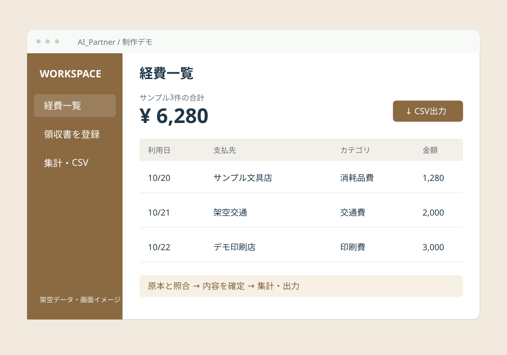

領収書をためてしまう
日付・支払先・金額の入力が後回しになり、月末にまとめて処理しています。
OUR WORKS 03 / EXPENSE MANAGEMENT
経費管理アプリ
領収書の内容を読み取り、人が確かめて経費一覧へ。入力・集計・CSV出力までをつなぐ仕組みです。

01 / BEFORE
以下は想定する業務課題です。実在する顧客の導入前状況ではありません。
日付・支払先・金額の入力が後回しになり、月末にまとめて処理しています。
一覧を作った後、カテゴリごとの集計や管理用ファイルへの転記が必要になります。
小さな印字や複数の金額を、原本を見ながら一つずつ照合しています。
02 / SOLUTION
導入時に目指す業務の流れです。確認・修正の工程を残して設計します。
領収書をスマートフォンで撮影
AIで日付・支払先・金額を抽出
原本と照合し、カテゴリを確定
一覧を集計してCSVで出力
03 / TRY THE DEMO
架空データで操作を体験できます。撮影・AI読み取り・外部連携は行いません。入力内容は外部へ送信・保存せず、再読み込みすると初期化します。実際の個人情報は入力しないでください。
架空の経費2件を表示しています。
| 利用日 | 支払先 | カテゴリ | 金額 |
|---|
円単位の金額を集計します。税区分の判定・会計ソフト連携・申請承認は含みません。
04 / AFTER
測定件数：0件。実際の削減時間・削減率・月間削減時間は、まだ確認していません。
TIME SAVING SIMULATOR
作業時間を入力すると、計算結果を確認できます。
実測の成果や導入後の効果を保証するものではありません。
1件の単位：領収書1枚。改善後の時間には、人の確認・修正・例外対応も含めてください。
ご自身の条件を入力してください。
削減率 =（改善前の平均時間 − 改善後の平均時間）÷ 改善前の平均時間 × 100
月間削減時間 =（改善前の平均時間 − 改善後の平均時間）× 月間処理件数 ÷ 60
同じ作業範囲・同じ品質基準で測定し、件数、対象期間、利用ツール、データの状態、確認・修正時間、例外処理の件数と所要時間を記録します。エラーや失敗した処理も含めて平均を計算し、公開時に条件と根拠を併記します。
05 / OPERATION & SAFETY
導入時に確認する運用設計です。
本デモに認証・権限管理機能はありません。

保存先、AIサービスへの送信範囲、保存期間、バックアップ、権限管理は、導入前に確認します。実運用の認証連携・データ移行は別の開発範囲です。
LET’S TALK ABOUT YOUR WORK.
今の業務の流れや、お使いのツールからお聞きします。
御殿場・静岡東部の、小さな業務改善から。
初回相談無料。相談フォームに、事例名が入力されます。